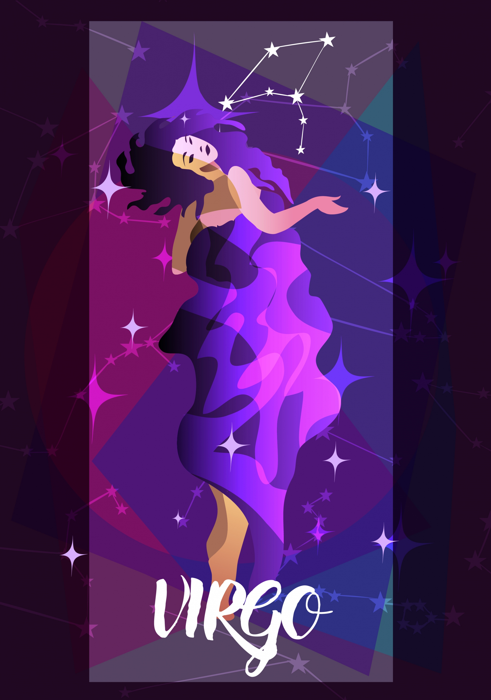

THE VIRGIN | AUG 23 - SEP 22
GRACEFUL, ORGANIZED, KIND
| Element: Earth | Polarity : Negative |
| Quality : Mutable | Ruling Planet: Mercury |
| Spirit Color : Silver | Lucky Gem : Peridot |
| Flower : Sunflower & marigold | Top Love Matches : Cancer |
| Ruling House : Sixth |
Smart, sophisticated, and kind, Virgo gets the job done without complaining. Virgos are amazing friends, always there to lend a hand and also lend advice. Practical Virgos are incredibly adept at big picture thinking, and planning out their life, their vacations, and what they're going to do today isn't a drag it makes them feel in control and secure. Virgo has a rich inner life, and can sometimes seem shy at first meeting. A Virgo won't spill secrets right away, and it's important to earn a Virgo's trust. But once you do, that Virgin will be a friend for life. And if you think that you're dating a shy Virgo, trust that those walls will fall down in the bedroom. One of the most passionate signs, Virgos specialize at connecting to their physicality, and this earth sign loves and celebrates physical connection with their partner.
Virgos expect perfection from themselves, and they may project those high standards on the other people in their life. A Virgo hates when someone lets him or her down, even if it's minor and unavoidable, like a last-minute cancellation. Virgins never want to disappoint the people in their lives, so they may spread themselves too thin put themselves last. Virgos love and are inspired by beauty. They consider what they wear and how they decorate their house to be an extension of their personality. They thrive when everything in their life looks Pinterest-perfect, and although their friends make fun of their penchant for organizing, it truly is the anchor that makes Virgo's life run smoothly.
Intelligent and a lifelong learner, Virgo loves trying new things, reading books, and learning about the world. They'll happily sign up for an adult-education course, and they consider an afternoon in bed with a book pretty much ideal. A Virgo prefers an evening with good friends to a huge party, and values downtime just as much as socializing. This sign doesn't need to fill their calendar to be content.
"My best can always be better."
Graceful, harmonious, and obsessed with making things the very best they can be, Virgo is notorious for being type A but that's only because this sign knows that everything good can be made great, and that everything great can be perfect. Smart and intensely curious, Virgos are passionate about uncovering the why which is why a Virgo's friends consider him or her their own personal encyclopedia. Known for their grace, Virgos can always talk their way out of sticky situations, and everyone is charmed by their wit and ability to put others at ease.
Virgo's desire to have everything be perfect can manifest in frustration when things don't live up to those (sometimes unrealistic) expectations. Besides occasionally leading to fights with friends and partners, Virgo's focus on perfection can cause everything even uploading an Instagram photo to take forever. Learning to go with the flow and accept “good enough†is a constant struggle.
Virgo is incredibly hard working. When this sign wants something, they'll work for it. They're also good at making the most of things friends look to them to help them with a DIY project or redecorate their home. Virgins push the people around them to be their best if you want a training buddy for a marathon, you know who to call. Bottom line: Virgos work hard, and that work ethic inspires everyone in their life.
Blake Lively, Cameron Diaz, Beyonce, Salma Hayak, Chris Pine, Jennifer Judson, Prince Harry, Nas, Jason Derulo, Mase, Zendaya